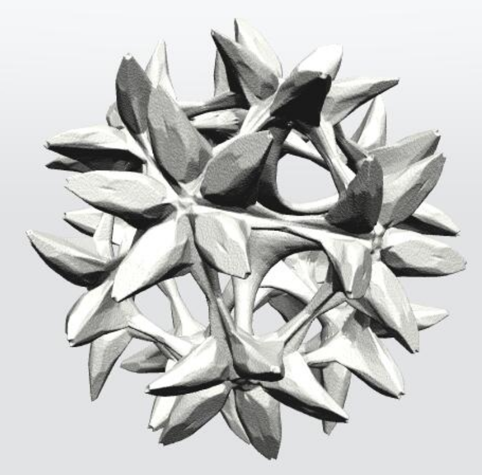
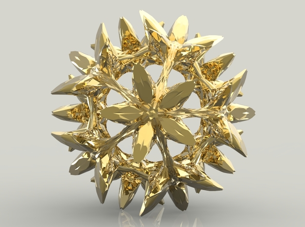
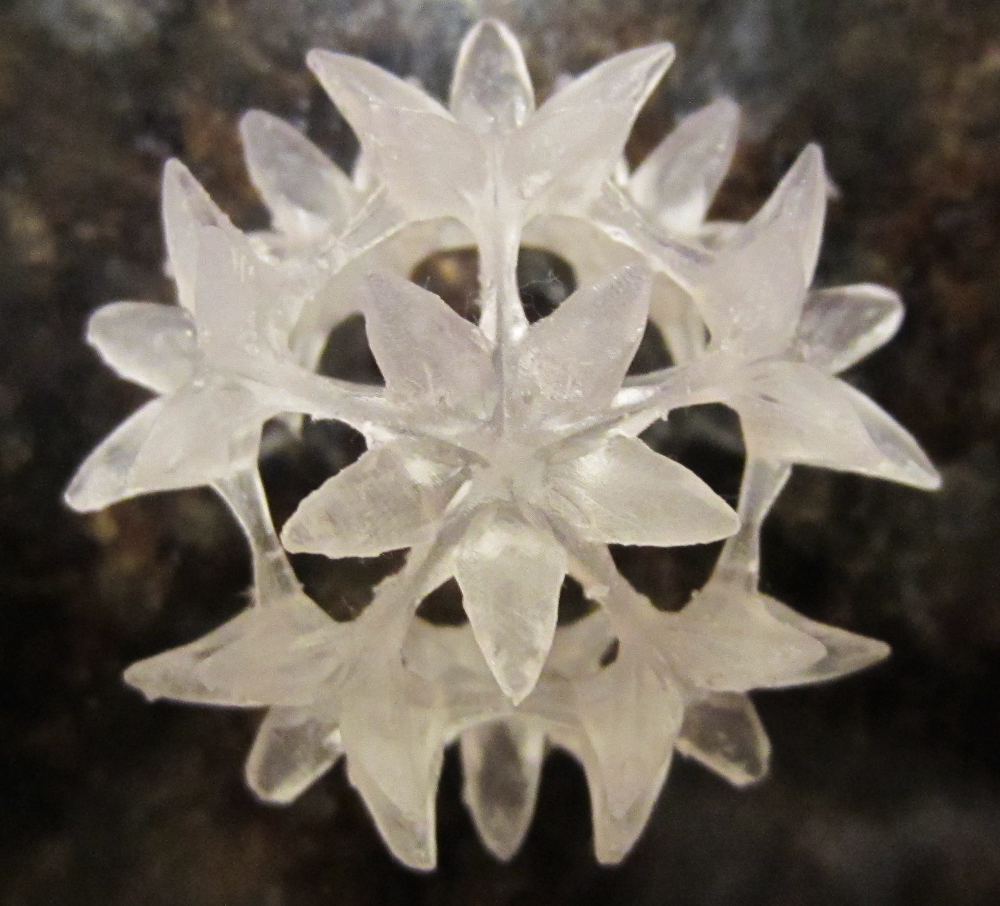
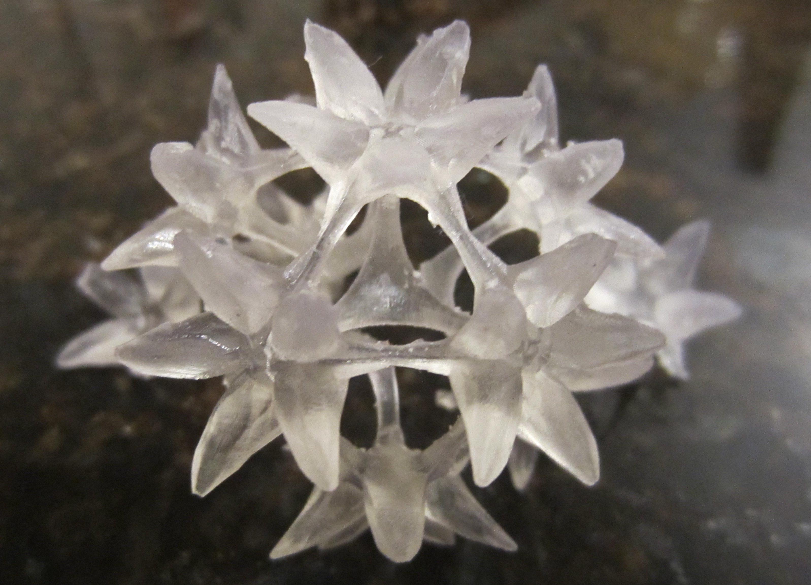

3D printing was a hobby of mine for some time. This design was one of the first "nice" things I created.
I chose to call it the icosablossom as the sculpture is essentially a slightly-modified, wireframed icosahedron
with flowers extruded from the vertices. The file is avaiable for download
here .
3D renders of the design:
 
Since its a pretty complex structure with lots of slim connections, printing it would have been quite expensive,
requiring a large build with lots of support material.
Luckily, while working at The Cube (McGill's 3D printing service),
we added a Form 2 to our fleet of printers and I finally got a chance to materialise the icosablossom.
3D print from the Form 2 (1.5"x1.5"):
 